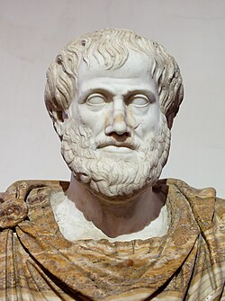

O que é Filosofia?
A filosofia é o estudo crítico da existência, do conhecimento e da moral humana. A palavra vem do grego e significa "amor à sabedoria", termo popularizado por Pitágoras.

Pitágoras de Samos (570 a.C.) foi um filósofo e matemático grego.
Foto: Wikimedia CommonsConceitos Clássicos
- “A filosofia é a busca pela sabedoria.” (Pitágoras)
- “A filosofia investiga as causas e princípios das coisas.” (Aristóteles)
- “A filosofia é a consciência da própria ignorância.” (Sócrates)

"Todos os homens, por natureza, desejam saber." (Aristóteles)
Foto: Wikimedia CommonsGaleria de Filósofos
Sócrates
"Só sei que nada sei."
Platão
"Tente mover o mundo, mas comece por si."
Karl Marx
"Os filósofos apenas interpretaram o mundo."
René Descartes
"Penso, logo existo."